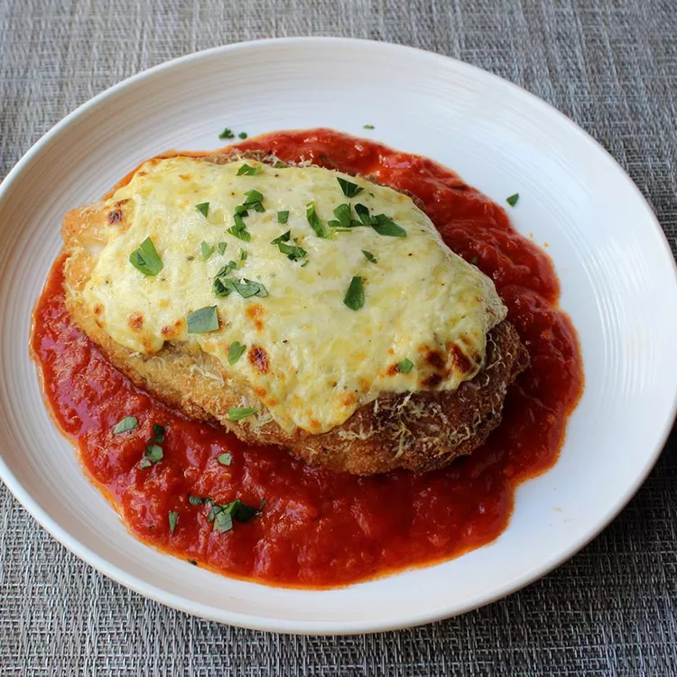

back
Chicken Parmesan

Description
I love chicken parm, especially when it's made with fresh mozzarella, which it almost never is in restaurants. Of course, at home we can use the real stuff, but it can be pricey. So I tried something new--a cheese spread using ricotta fortified with sharp Cheddar.
Ingredients
- 2 large skinless, boneless chicken breast halves
- ½ teaspoon kosher salt
- ½ cup flour
- 1 egg, beaten
- ¾ cup dry bread crumbs
- ½ cup light olive oil for frying, or as needed
Steps
- Preheat oven to 500 degrees F (260 degrees C). Line a rimmed baking sheet with aluminum foil.
- Gently pound chicken breasts between 2 layers of plastic until each breast is evenly thick. Place breasts on a plate and season 1 side with kosher salt and black pepper.
- Heat 1/2 inch olive oil in a skillet over medium-high heat. Cook chicken until crispy and golden, 2 to 3 minutes per side. Transfer to prepared baking sheet.
- Bake on center rack of preheated oven until cheese is melted and chicken is no longer pink in the center and the juices run clear, 10 to 12 minutes.
- To serve, ladle the heated marinara sauce in a wide circle on warm plates. Place chicken in center and sprinkle with chopped parsley.